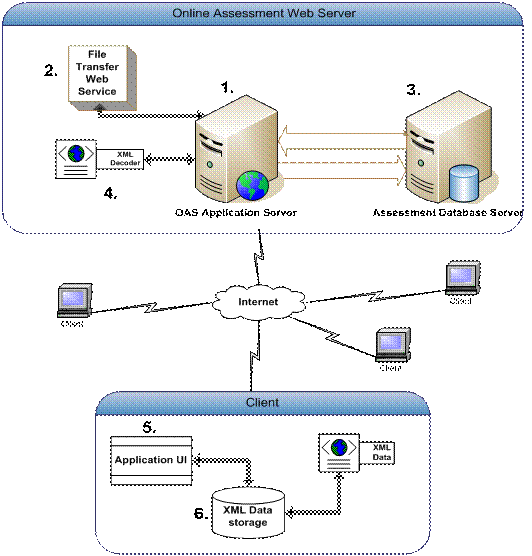
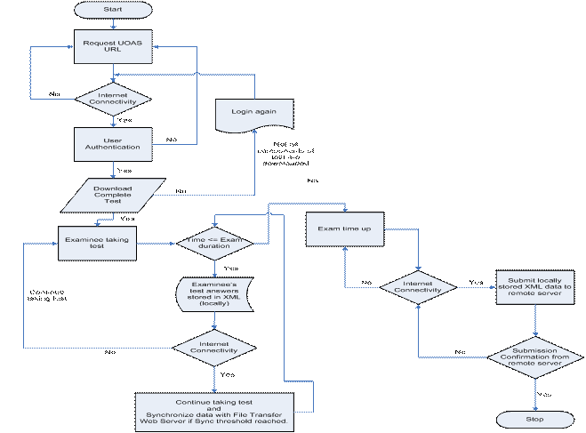

Online Data Backup System
___________________________________________________________________________________________________________________
Student: Supriya Lohgaonkar
This research was supported by the Thurgood marshal college funds, TMCF/DOE HBCU technology graduate student award,Year: 2009-2010.
1. Purpose
There has been increasing research in developing offline web applications. This project concentrates on developing a new methodology for the online assessment web applications that could be used while offline. It is important to retrieve the critical data collected during an examination without a provision of a backup mechanism. There is a need for an assessment system that can adapt to work uninterruptedly and without loss of critical data while there is intermittent internet discontinuity. This project describes architecture and implementation of online assessment system with offline capabilities. Online assessment system with offline capabilities will not interrupt examinee’s experience while appearing for an assessment test if internet connection is not available. A development methodology is designed and a compliant framework is implemented to enhance online assessment system with offline capabilities.
2. Description
Microsoft .NET technologies and XML standard make a great combination for implementing distributed information systems. XML enables disparate software systems to exchange messages. C# enables implementation of distributed information systems in a methodical way. As C# together with XML provides several technologies for integration, designers face the challenge of combining the technologies in the most effective and flexible manner possible to create an integration architecture that is opt for future extensions and changes. XML fragments are transferred from server to client, where they are read or modified, and modifications of client transactions are transferred back to the server. The clients use XPath expressions to access XML fragments, i.e. all XML fragments read or written by clients. This reduces the data exchange in synchronization. We furthermore suggest exchanging XPath expressions instead of larger XML fragments wherever possible. This allows us not only to treat lost connections more flexible but also to operate efficiently on clients with small bandwidth connections to a server.

Fig. 1 : Architecture of Online Assessment System with offline capabilities
The Fig.1 shows the architecture of the online assessment system with offline capabilities. The system is divided into four major parts - assessment database server, XML Decoder, Client Application UI, Client XML data storage.
3. Approach
Fig.2 depicts the flowchart of online assessment system with offline capabilities. It gives general overview of the system. Examinee logs into the OAS (Online Assessment System) website by authenticating himself/herself with the valid credentials.

Fig. 2 : Flowchart of Online Assessment System with Offline Capabilities
An online assessment system with offline capabilities shows modeless characteristic. In a modal application, when the application is online it communicates with the server. When it's offline, it uses the local storage. Data must be synchronized when the application switches between modes. Switching between online and offline modes is done automatically in the background while examinee is appearing for an assessment test. An online assessment system with offline capabilities uses the local storage as much as possible and does continuous, small data synchronization in the background when the server is available. The advantages of modeless applications are:
Publications:
Copyright © Sharad Sharma., All Rights Reserved